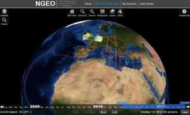
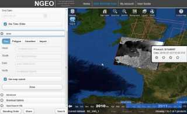
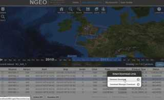

The next generation user services for earth observation.
ngEO is the Next Generation Earth Observation system designed to manage end-user Earth Observation services.
Using the Generic Catalog Services, you can browse the metadata and images of Earth Observation data acquired by various satellites.
  